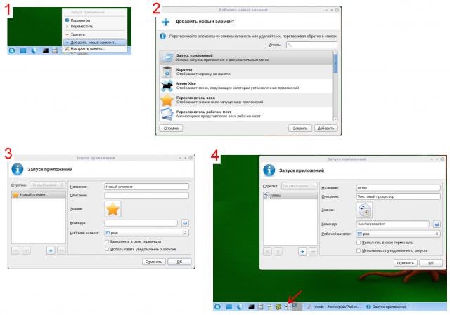

Xfce. Добавление кнопки быстрого запуска

В графической среде KDE добавить значек быстрого запуска приложения на панель очень просто (находим в меню -> правой кнопкой ? добавить...). В среде Xfce такой возможности нет. В Xfce кнопку быстрого запуска приложения можно получить через окно добавления различных элементов на Главную панель. Для этого необходимо выполнить следующие действия:
- Щелкните правой кнопкой мыши в любом месте главной панели. Желательно попасть именно туда, где планируется разместить кнопку. Иначе после всего нужно будет переместить значок (правой кнопкой по нему ? Переместить).
- В появившемся контекстном меню выберите пункт Добавить новый элемент. Появится одноименное диалоговое окно со списком возможных элементов Главной панели. Выберите пункт Запуск приложений и нажмите кнопку Добавить.
- Появляется окно Запуск приложений для настройки кнопки быстрого запуска. Здесь следует обязательно прописать Название элемента и Команду, запускающее приложение. Команду (путь к файлу) можно выбрать в списке, открывающемся при щелчке на изображении папки. Файлы отсортированы по алфавиту. Также желательно сменить значок.
- После установки всех настроек следует нажать на кнопку ОК.